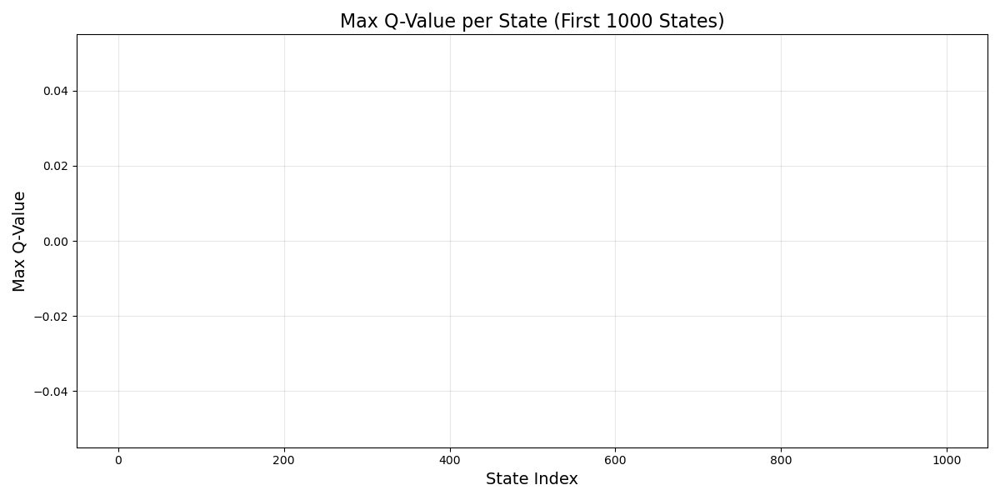

Q-Learning for Cutting Stock Problem - Visualization Report
Training Metrics
This graph shows the rewards, epsilon decay, and steps per episode during training.
Q-table Heatmap
This heatmap visualizes a sample of the Q-table, showing the learned state-action values.
Q-value Distribution
This histogram shows the distribution of non-zero Q-values in the Q-table.
State Values

This bar chart shows the maximum Q-value for each state.
Cutting Stock Results
This graph shows the material usage and waste percentages for each stock.